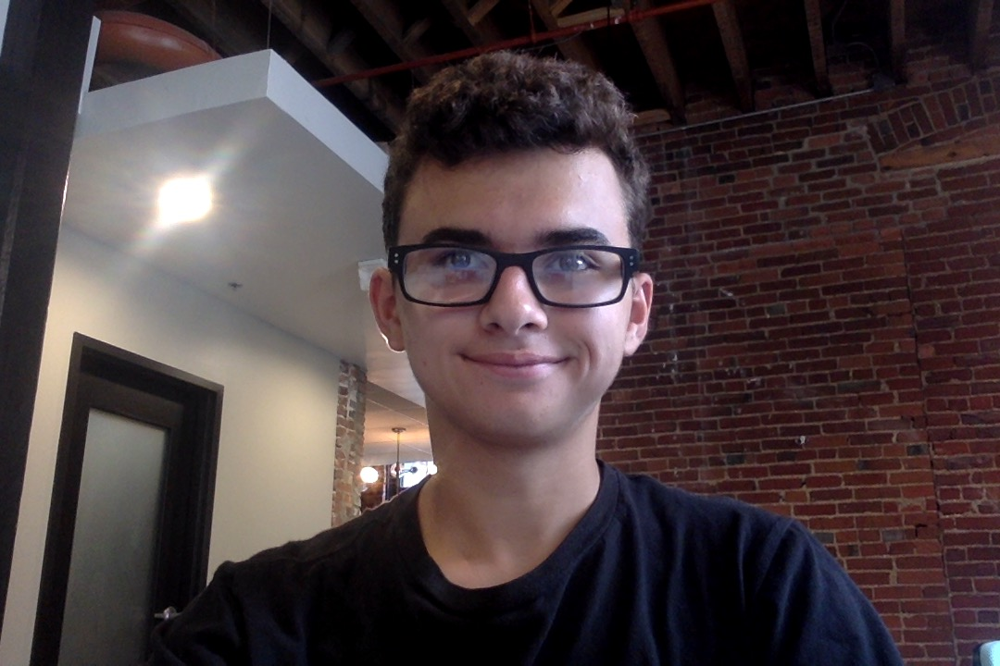

I like to think of myself as skilled builder and innovator in robotics. My first year I recieved the innovators award for my builds. My projects include a claw, rubberband roller, and a lift. During the 2017-2018 school year at PPHS our robotics team made it to state. Xavier Howard and I (The Dynamic Duo) sweated profously throughout the event. It was a great experience. Shout out to Coach Mundell!
I run cross country and track at my school. I enjoy XC more than track because of the new scenery every time I run. Running and hiking through forests are some of my favorite things to do. I love everything outdoors, anything rollercoasters, and kayaking.
I was born on July the second, 2002. This also means I'm about to be 16! I won't be able to drive until next summer though. Also, I'm growing too quickly. My sister and I are 11 months apart, meaning that I'm the same age as her for around 3 weeks.(Don't tell her that.)
My github profile 